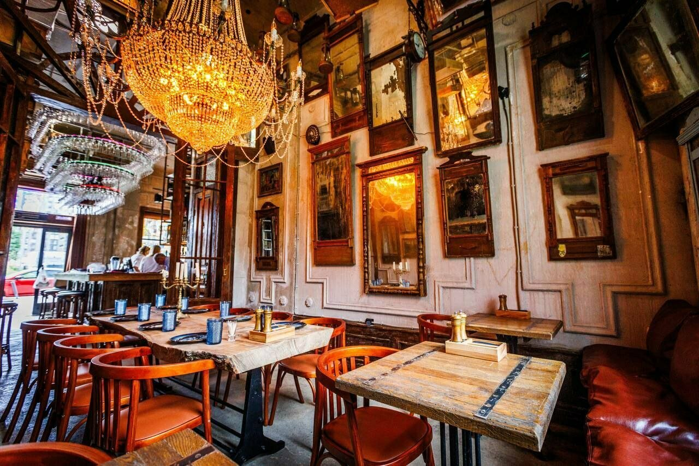
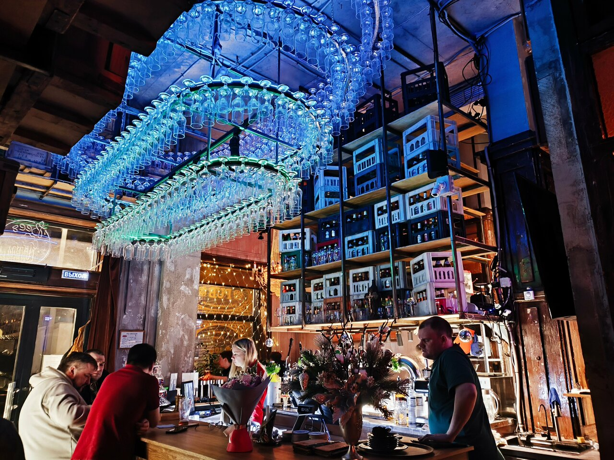
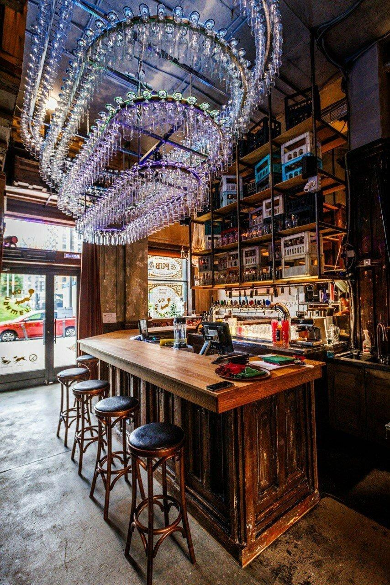
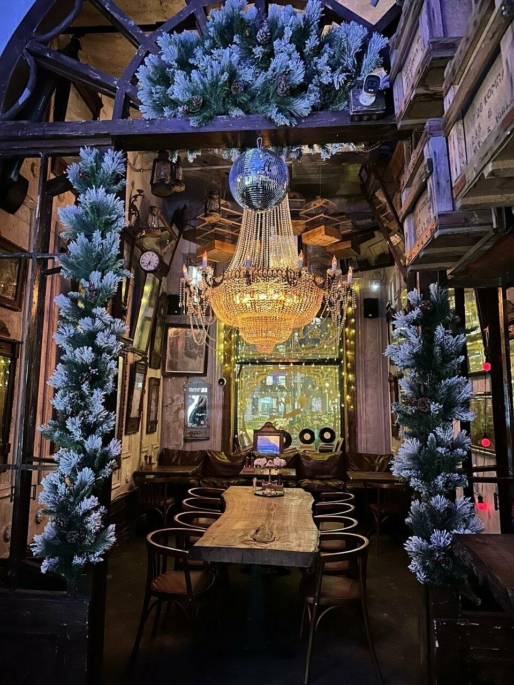

Паб в Измайлово
Он пришёл…
Fish & chips, бургеры и разливное пиво. Вечер за столиком под хрустальными люстрами.
Барная стойка и зал
Внутри паба



Заходите
Адрес
Москва, Измайловский проезд, 5/1к1Часы работы
Ежедневно, 14:00–23:00